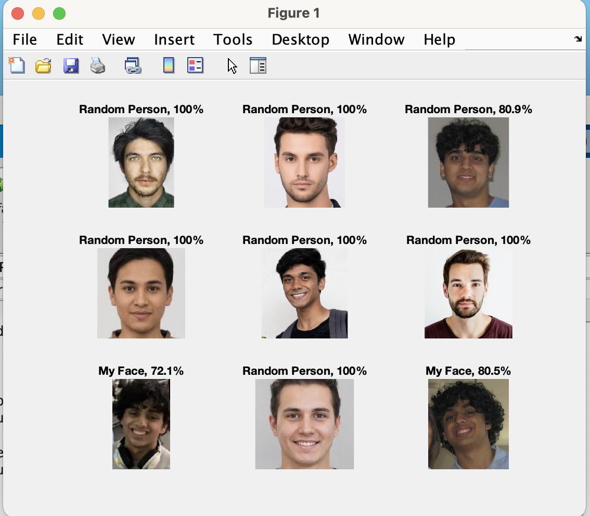
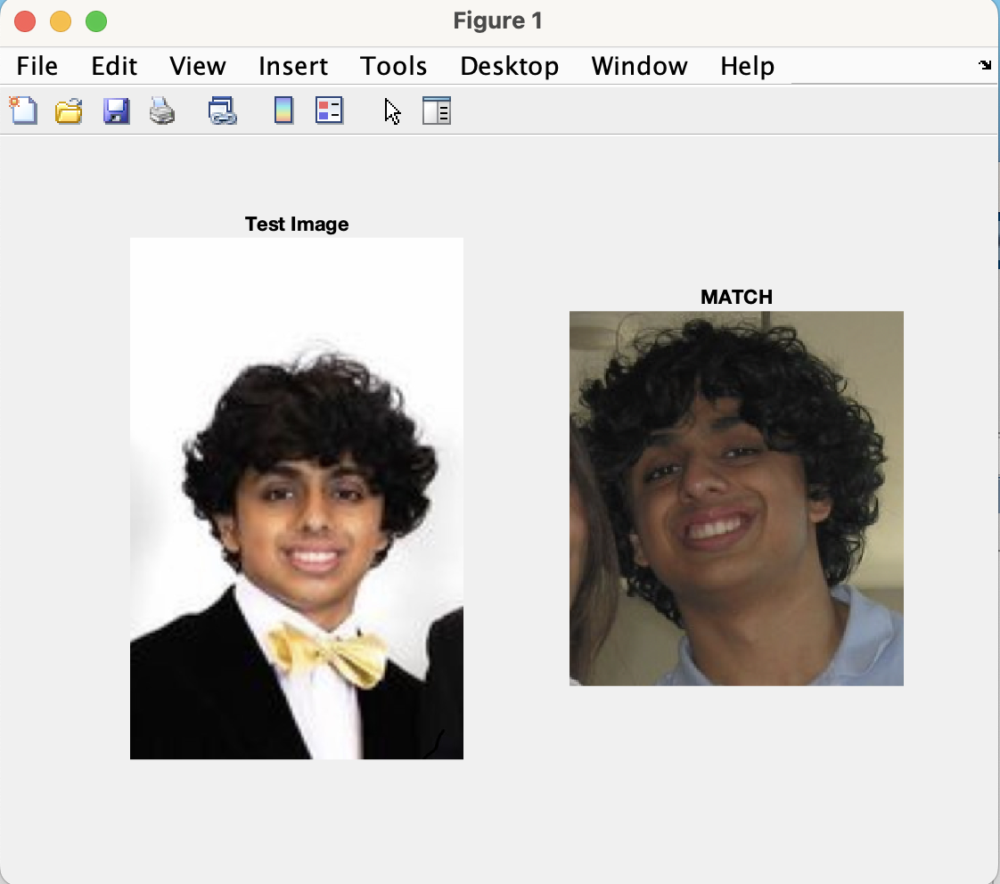

Screenshots

Training Progress of Deep Learning

Testing Using Random Image Dataset

Implementation to Recognize My Face
Matlab project using deep learning for facial recognition.
This comprehensive MATLAB project centers around the application of deep learning methodologies, employing the versatile Deep Learning Toolbox and Image Processing Toolbox. The primary goal is to fine-tune a SqueezeNet model for effective face recognition. The project encompasses various stages, starting with the preprocessing of facial image data and subsequent configuration of the SqueezeNet model. Through the utilization of training options and the trainNetwork function, the model undergoes a training phase aimed at optimizing its capacity to accurately identify facial features. The project further includes an evaluation process, measuring the accuracy of the trained model on a validation set. By combining these elements, the project seeks to establish a proficient and reliable face recognition system within the MATLAB environment.
Training Progress of Deep Learning
Testing Using Random Image Dataset
Implementation to Recognize My Face